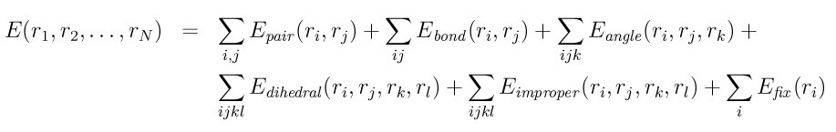

minimize command¶
Syntax¶
minimize etol ftol maxiter maxeval
etol = stopping tolerance for energy (unitless)
ftol = stopping tolerance for force (force units)
maxiter = max iterations of minimizer
maxeval = max number of force/energy evaluations
Examples¶
minimize 1.0e-4 1.0e-6 100 1000
minimize 0.0 1.0e-8 1000 100000
Description¶
Perform an energy minimization of the system, by iteratively adjusting atom coordinates. Iterations are terminated when one of the stopping criteria is satisfied. At that point the configuration will hopefully be in local potential energy minimum. More precisely, the configuration should approximate a critical point for the objective function (see below), which may or may not be a local minimum.
The minimization algorithm used is set by the min_style command. Other options are set by the min_modify command. Minimize commands can be interspersed with run commands to alternate between relaxation and dynamics. The minimizers bound the distance atoms move in one iteration, so that you can relax systems with highly overlapped atoms (large energies and forces) by pushing the atoms off of each other.
Alternate means of relaxing a system are to run dynamics with a small or limited timestep. Or dynamics can be run using fix viscous to impose a damping force that slowly drains all kinetic energy from the system. The pair_style soft potential can be used to un-overlap atoms while running dynamics.
The minimization styles cg, sd, and hftn involves an outer iteration loop which sets the search direction along which atom coordinates are changed. An inner iteration is then performed using a line search algorithm. The line search typically evaluates forces and energies several times to set new coordinates. Currently, a backtracking algorithm is used which may not be optimal in terms of the number of force evaluations performed, but appears to be more robust than previous line searches we’ve tried. The backtracking method is described in Nocedal and Wright’s Numerical Optimization (Procedure 3.1 on p 41).
The minimization styles quickmin and fire perform damped dynamics using an Euler integration step. Thus they require a timestep be defined, typically the same value used for running dynamics with the system, though it may be more efficient to use a larger timestep.
The objective function being minimized is the total potential energy of the system as a function of the N atom coordinates:
where the first term is the sum of all non-bonded pairwise interactions including long-range Coulombic interactions, the 2nd through 5th terms are bond, angle, dihedral, and improper interactions respectively, and the last term is energy due to fixes which can act as constraints or apply force to atoms, such as through interaction with a wall. See the discussion below about how fix commands affect minimization.
The starting point for the minimization is the current configuration of the atoms.
The minimization procedure stops if any of several criteria are met:
the change in energy between outer iterations is less than etol
the 2-norm (length) of the global force vector is less than the ftol
the line search fails because the step distance backtracks to 0.0
the number of outer iterations or timesteps exceeds maxiter
the number of total force evaluations exceeds maxeval
For the first criterion, the specified energy tolerance etol is unitless; it is met when the energy change between successive iterations divided by the energy magnitude is less than or equal to the tolerance. For example, a setting of 1.0e-4 for etol means an energy tolerance of one part in 10^4. For the damped dynamics minimizers this check is not performed for a few steps after velocities are reset to 0, otherwise the minimizer would prematurely converge.
For the second criterion, the specified force tolerance ftol is in force units, since it is the length of the global force vector for all atoms, e.g. a vector of size 3N for N atoms. Since many of the components will be near zero after minimization, you can think of ftol as an upper bound on the final force on any component of any atom. For example, a setting of 1.0e-4 for ftol means no x, y, or z component of force on any atom will be larger than 1.0e-4 (in force units) after minimization.
Either or both of the etol and ftol values can be set to 0.0, in which case some other criterion will terminate the minimization.
During a minimization, the outer iteration count is treated as a timestep. Output is triggered by this timestep, e.g. thermodynamic output or dump and restart files.
Using the thermo_style custom command with the fmax or fnorm keywords can be useful for monitoring the progress of the minimization. Note that these outputs will be calculated only from forces on the atoms, and will not include any extra degrees of freedom, such as from the fix box/relax command.
Following minimization, a statistical summary is printed that lists which convergence criterion caused the minimizer to stop, as well as information about the energy, force, final line search, and iteration counts. An example is as follows:
Minimization stats:
Stopping criterion = max iterations
Energy initial, next-to-last, final =
-0.626828169302 -2.82642039062 -2.82643549739
Force two-norm initial, final = 2052.1 91.9642
Force max component initial, final = 346.048 9.78056
Final line search alpha, max atom move = 2.23899e-06 2.18986e-05
Iterations, force evaluations = 2000 12724
The 3 energy values are for before and after the minimization and on the next-to-last iteration. This is what the etol parameter checks.
The two-norm force values are the length of the global force vector before and after minimization. This is what the ftol parameter checks.
The max-component force values are the absolute value of the largest component (x,y,z) in the global force vector, i.e. the infinity-norm of the force vector.
The alpha parameter for the line-search, when multiplied by the max force component (on the last iteration), gives the max distance any atom moved during the last iteration. Alpha will be 0.0 if the line search could not reduce the energy. Even if alpha is non-zero, if the “max atom move” distance is tiny compared to typical atom coordinates, then it is possible the last iteration effectively caused no atom movement and thus the evaluated energy did not change and the minimizer terminated. Said another way, even with non-zero forces, it’s possible the effect of those forces is to move atoms a distance less than machine precision, so that the energy cannot be further reduced.
The iterations and force evaluation values are what is checked by the maxiter and maxeval parameters.
Warning
There are several force fields in LAMMPS which have discontinuities or other approximations which may prevent you from performing an energy minimization to high tolerances. For example, you should use a pair style that goes to 0.0 at the cutoff distance when performing minimization (even if you later change it when running dynamics). If you do not do this, the total energy of the system will have discontinuities when the relative distance between any pair of atoms changes from cutoff+epsilon to cutoff-epsilon and the minimizer may behave poorly. Some of the manybody potentials use splines and other internal cutoffs that inherently have this problem. The long-range Coulombic styles (PPPM, Ewald) are approximate to within the user-specified tolerance, which means their energy and forces may not agree to a higher precision than the Kspace-specified tolerance. In all these cases, the minimizer may give up and stop before finding a minimum to the specified energy or force tolerance.
Note that a cutoff Lennard-Jones potential (and others) can be shifted so that its energy is 0.0 at the cutoff via the pair_modify command. See the doc pages for individual pair styles for details. Note that Coulombic potentials always have a cutoff, unless versions with a long-range component are used (e.g. pair_style lj/cut/coul/long). The CHARMM potentials go to 0.0 at the cutoff (e.g. pair_style lj/charmm/coul/charmm), as do the GROMACS potentials (e.g. pair_style lj/gromacs).
If a soft potential (pair_style soft) is used the Astop value is used for the prefactor (no time dependence).
The fix box/relax command can be used to apply an external pressure to the simulation box and allow it to shrink/expand during the minimization.
Only a few other fixes (typically those that apply force constraints) are invoked during minimization. See the doc pages for individual fix commands to see which ones are relevant.
Warning
Some fixes which are invoked during minimization have an associated potential energy. For that energy to be included in the total potential energy of the system (the quantity being minimized), you MUST enable the fix_modify energy option for that fix. The doc pages for individual fix commands specify if this should be done.
Restrictions¶
Features that are not yet implemented are listed here, in case someone knows how they could be coded:
It is an error to use fix shake with minimization because it turns off bonds that should be included in the potential energy of the system. The effect of a fix shake can be approximated during a minimization by using stiff spring constants for the bonds and/or angles that would normally be constrained by the SHAKE algorithm.
Fix rigid is also not supported by minimization. It is not an error to have it defined, but the energy minimization will not keep the defined body(s) rigid during the minimization. Note that if bonds, angles, etc internal to a rigid body have been turned off (e.g. via neigh_modify exclude), they will not contribute to the potential energy which is probably not what is desired.
Pair potentials that produce torque on a particle (e.g. granular potentials or the GayBerne potential for ellipsoidal particles) are not relaxed by a minimization. More specifically, radial relaxations are induced, but no rotations are induced by a minimization, so such a system will not fully relax.